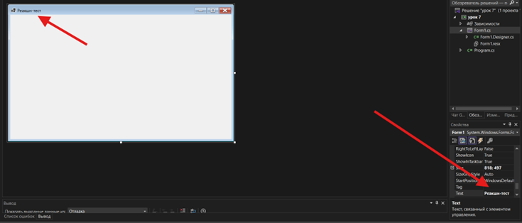
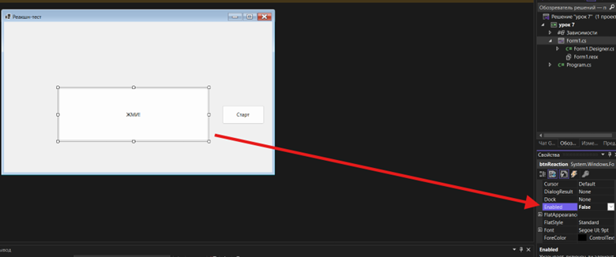
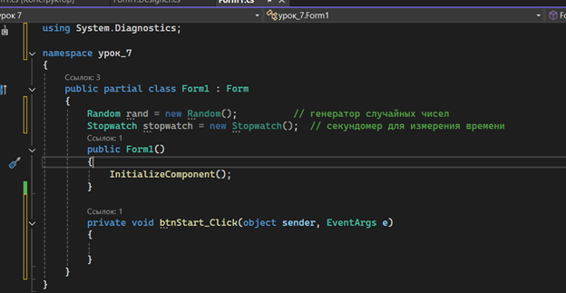
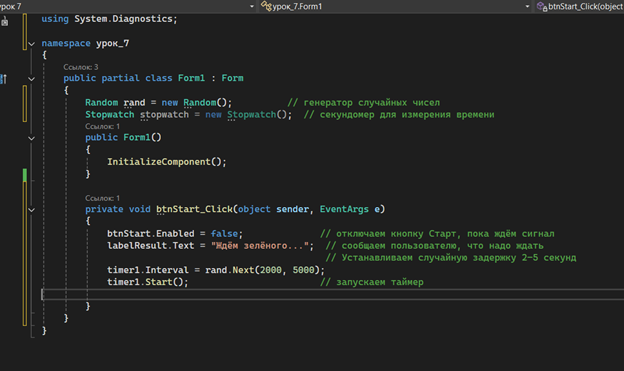
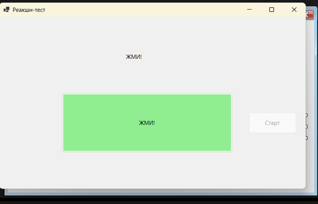
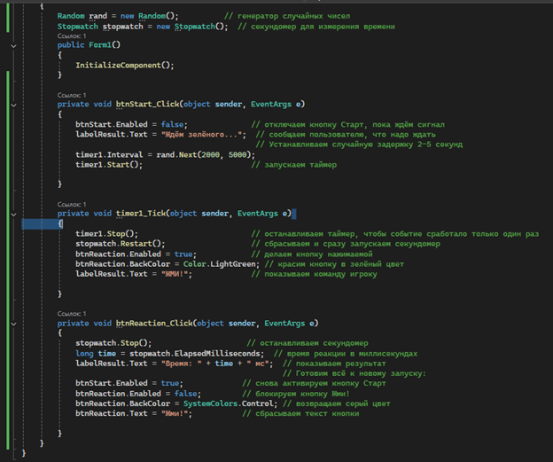

Теоретическая часть
btnStart_Click.Аналогия: событие — как звонок в дверь, а обработчик — это ответ хозяина, который открывает дверь.
timer1_Tick).
Мы используем таймер, чтобы создать случайную задержку перед тем, как показать сигнал
«Жми!».
stopwatch.ElapsedMilliseconds
— это и будет время реакции в миллисекундах.
В этой игре мы будем использовать простые элементы Windows Forms: кнопки, метки, таймер и секундомер. Мы научимся писать код, который реагирует на нажатие кнопок и использует таймер для задержки и класс Stopwatch для измерения времени.
Практическая часть — Создание проекта и интерфейса
"Реакшн-тест",
чтобы в заголовке окна было название игры.
- ▸Кнопку btnStart с текстом «Старт»
- ▸Кнопку btnReaction с текстом «Жми!», но сразу же в свойствах сделайте её
Enabled = false(чтобы её нельзя было нажать до сигнала) и поставьте фоновый цвет, например, серый - ▸Метку labelResult для вывода результата. Можно
изначально установить
labelResult.Text = ""(пуста)

timer1.
Интервал можно оставить любым — мы будем устанавливать его в коде.Глава 1 — Объявление переменных
Дважды щёлкните по кнопке btnStart в дизайнере, чтобы создать
обработчик события btnStart_Click. В коде
формы (Form1.cs) прямо внутри класса Form1 (снаружи методов) добавьте следующие поля:
Random rand = new Random(); // генератор случайных чисел Stopwatch stopwatch = new Stopwatch(); // секундомер для измерения времени
Эти объекты позволят нам вызывать случайную задержку и измерять время реакции.

Глава 2 — Код кнопки «Старт»
Напишем код, который начинает игру. В обработчике события btnStart_Click:
private void btnStart_Click(object sender, EventArgs e) { btnStart.Enabled = false; // отключаем кнопку Старт, пока ждём сигнал labelResult.Text = "Ждём зелёного..."; // сообщаем пользователю, что надо ждать // Устанавливаем случайную задержку 2-5 секунд timer1.Interval = rand.Next(2000, 5000); timer1.Start(); // запускаем таймер }
Объяснение: когда ученик нажимает «Старт», мы сразу выключаем эту кнопку (чтобы
случайно не нажать повторно) и выводим сообщение «Ждём зелёного...». С помощью rand.Next(2000, 5000)
устанавливаем задержку от 2000 до 5000 миллисекунд. Затем запускаем timer1.

Глава 3 — Обработчик таймера
Дважды щёлкните по таймеру timer1 внизу окна, чтобы создать метод
timer1_Tick. В этом
методе мы должны остановить таймер, сменить кнопку на зелёную и запустить секундомер:
private void timer1_Tick(object sender, EventArgs e) { timer1.Stop(); // останавливаем таймер, чтобы событие сработало только один раз stopwatch.Restart(); // сбрасываем и сразу запускаем секундомер btnReaction.Enabled = true; // делаем кнопку нажимаемой btnReaction.BackColor = Color.LightGreen; // красим кнопку в зелёный цвет labelResult.Text = "ЖМИ!"; // показываем команду игроку }
Объяснение: после случайной задержки таймер «тиком» вызывает этот метод. Мы
останавливаем таймер (Stop), чтобы он не
тикал повторно. Запускаем stopwatch, чтобы засечь время. Включаем кнопку
btnReaction, меняем её цвет на зелёный (чтобы игрок понял, что можно жать) и
выводим на метке «ЖМИ!». Теперь игрок должен как можно быстрее нажать зелёную кнопку.

Глава 4 — Обработчик кнопки «Жми!» (измерение времени)
Дважды щёлкните по кнопке btnReaction, чтобы создать btnReaction_Click.
Здесь мы останавливаем секундомер и выводим результат реакции:
private void btnReaction_Click(object sender, EventArgs e) { stopwatch.Stop(); // останавливаем секундомер long time = stopwatch.ElapsedMilliseconds; // время реакции в миллисекундах labelResult.Text = "Время: " + time + " мс"; // показываем результат // Готовим всё к новому запуску: btnStart.Enabled = true; // снова активируем кнопку Старт btnReaction.Enabled = false; // блокируем кнопку Жми! btnReaction.BackColor = SystemColors.Control; // возвращаем серый цвет btnReaction.Text = "Жми!"; // сбрасываем текст кнопки }
Объяснение: когда игрок нажмёт зелёную кнопку, мы останавливаем stopwatch и
получаем количество миллисекунд реакции (ElapsedMilliseconds).
Показываем это время в метке. Затем сбрасываем состояние игры: включаем кнопку «Старт»,
выключаем кнопку «Жми!» и возвращаем ей изначальный вид (серый цвет и прежний текст). Теперь
можно запустить игру заново.

Полный код программы
using System; using System.Diagnostics; using System.Drawing; using System.Windows.Forms; namespace ReactionTest { public partial class Form1 : Form { Random rand = new Random(); // генератор случайных чисел Stopwatch stopwatch = new Stopwatch(); // секундомер public Form1() { InitializeComponent(); } private void btnStart_Click(object sender, EventArgs e) { btnStart.Enabled = false; labelResult.Text = "Ждём зелёного..."; timer1.Interval = rand.Next(2000, 5000); timer1.Start(); } private void timer1_Tick(object sender, EventArgs e) { timer1.Stop(); stopwatch.Restart(); btnReaction.Enabled = true; btnReaction.BackColor = Color.LightGreen; labelResult.Text = "ЖМИ!"; } private void btnReaction_Click(object sender, EventArgs e) { stopwatch.Stop(); labelResult.Text = "Время: " + stopwatch.ElapsedMilliseconds + " мс"; btnReaction.Enabled = false; btnReaction.BackColor = SystemColors.Control; btnStart.Enabled = true; } } }
Итог урока
Ученик собрал простую игру «Реакшн-тест» с графическим интерфейсом Windows Forms. Мы разобрали ключевые инструменты для работы со временем и событиями.
- ✅ Ученик собрал простую игру «Реакшн-тест» с графическим интерфейсом Windows Forms
- ✅ Мы научились использовать класс Timer для создания случайной задержки и класс Stopwatch для точного измерения времени
- ✅ Разобрались с обработчиками событий: событие Click у кнопок и Tick у таймера
- ✅ Поняли, как изменять свойства элементов (текст кнопки, её цвет, доступность) во время выполнения программы
Самостоятельная работа
BackgroundImage
формы.